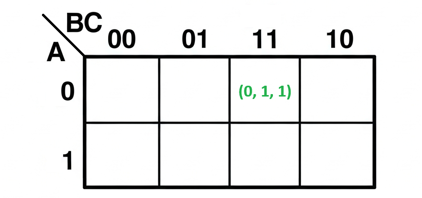
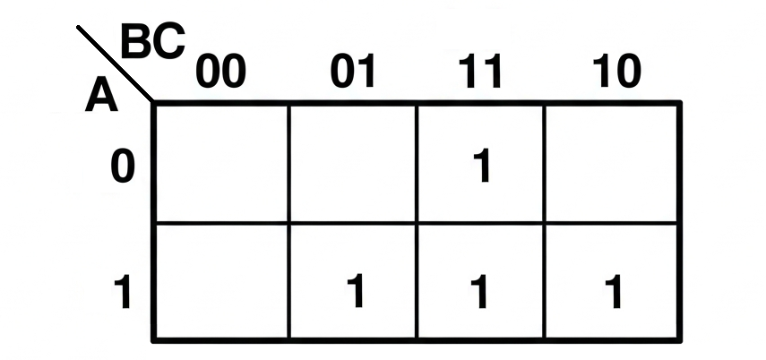
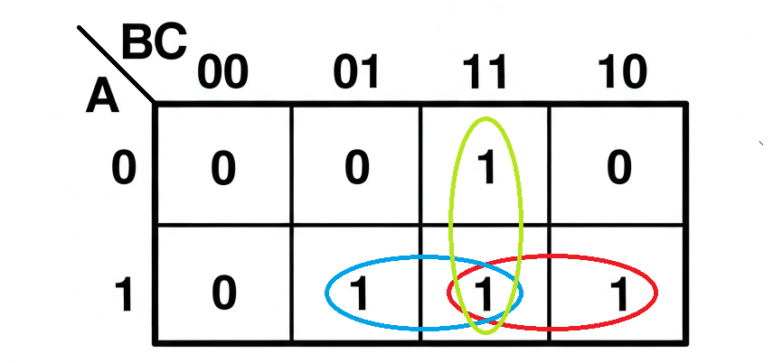
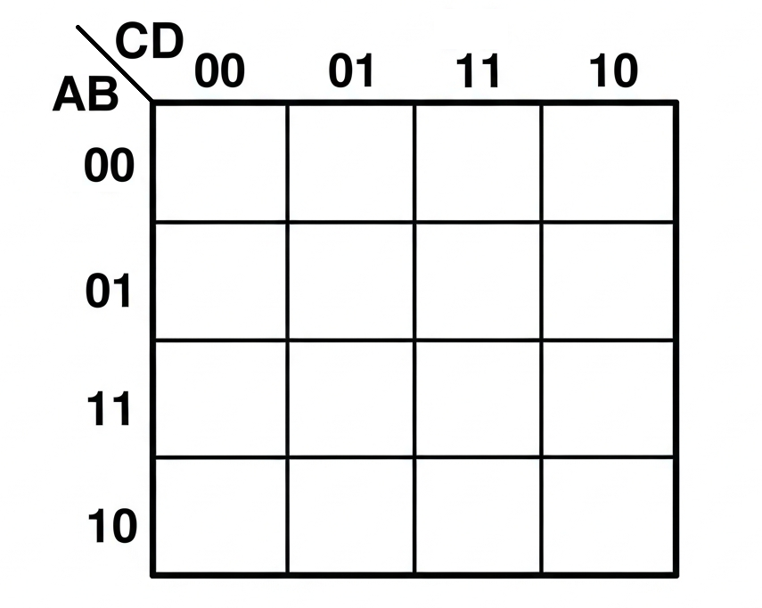

Unidad 2: Lógica Digital - Lección 16
En la lección anterior, creamos la ecuación SOP para el jurado de 3 jueces:
P = \(\bar{A}BC + A\bar{B}C + AB\bar{C} + ABC\)
Esta ecuación era el resultado directo de aplicar el método de los minterms a la tabla de verdad. Era funcional, pero como vimos, era compleja ("fuerza bruta").
¡Ahora, con los Mapas de Karnaugh, vamos a simplificar esta ecuación gigante visualmente hasta llegar a la forma elegante: P = AB + AC + BC.
En la lección anterior terminamos con una ecuación gigante para nuestro jurado. ¿Tenemos que construirla así? ¡No! Los ingenieros odian el desperdicio. Hoy usaremos una herramienta gráfica llamada Mapa K para jugar con los unos y ceros, agruparlos y reducir esa ecuación monstruosa a algo pequeño y elegante.
Una vez simplificada con Karnaugh, la ecuación SOP resultante es mucho más manejable para aplicar las Leyes de De Morgan, vistas en la Lección 14, si se desea implementar el circuito final con tipos específicos de compuertas (como solo NAND o solo NOR). Karnaugh y De Morgan son aliados en el proceso de diseño.
El Mapa K es una tabla donde organizamos las combinaciones posibles. Es como jugar "Batalla Naval": cada casilla tiene una coordenada única.
El Código Gray: Fíjate que el orden de las columnas es 00, 01, 11, 10.
¿Por qué no 10, 11? Porque la regla exige que, al pasar de una celda a la vecina, SOLO cambie un bit. Esto es lo que permite la simplificación mágica.
Este orden específico (00, 01, 11, 10 en lugar de 00, 01, 10, 11) se llama Código Gray. Garantiza que solo una variable cambie entre celdas vecinas, lo que es fundamental para la simplificación por agrupamiento.
Cada celda representa una combinación de \(A, B, C\). Mira este ejemplo:

Fig 1. La celda (0, 1, 1). Fila A=0, Columna BC=11.
Si en tu Tabla de Verdad tienes una fila donde \(A=0, B=1, C=1\) y la salida es 1, entonces pones ese 1 en esta casilla exacta: Fila 0, Columna 11.
En la Lección 14 conociste la Ley de Absorción (\(A + A \cdot B = A\)) y te prometimos que era el "borrador mágico" del álgebra. En el Mapa de Karnaugh, esta ley es la razón matemática de una de nuestras reglas de oro:
"Haz los grupos lo más grandes posible y NO hagas grupos pequeños dentro de los grandes."
¿Por qué? Imagina que tienes un grupo gigante de 4 celdas (que representa el término \(A\)). Si por error encierras también una parejita de unos que está dentro de ese mismo grupo gigante (que representaría el término \(A \cdot B\)), tu ecuación final quedaría como \(A + A \cdot B\).
Visualmente, el rectángulo grande "absorbe" al rectángulo pequeño. ¡El mapa está haciendo el álgebra por ti, eliminando la redundancia sin que tengas que escribir una sola fórmula matemática!
Tu misión es encerrar los 1s en "globos" o grupos. Reglas:
Algunos errores frecuentes al agrupar unos en el mapa son:
Verifica tus agrupamientos con estos puntos para evitar simplificaciones incorrectas.
Primero, trasladamos los datos de nuestra Tabla de Verdad al Mapa. Recuerda: El circuito se activa (1) si hay Mayoría (2 o 3 jueces votan sí).

Fig 2. Así se ve el mapa antes de agrupar. Verifiquemos la lógica:
En el esquema tradicional estricto, todas las celdas vacías se rellenan con un 0. Esos ceros representan los casos donde la propuesta NO se aprueba (minoría de votos).
Nota de Diseño: A menudo, los ingenieros dejamos esas casillas en blanco simplemente para tener "limpieza visual" y ver mejor los grupos de unos. Pero recuerda: ¡Espacio vacío significa 0 lógico!
Ahora que tenemos los unos, sacamos los marcadores de colores. Buscamos parejas (grupos de 2) para simplificar.

Fig 3. ¡Encontramos 3 parejas! (Roja, Azul, Verde).
Analicemos nuestros grupos:
¡Pasamos de 4 términos de 3 letras a una ecuación simple! Mucho más fácil de conectar.
¿Qué pasa si tienes 4 sensores? El mapa crece a 16 casillas (\(4 \times 4\)).
Las reglas son las mismas: filas AB y columnas CD, siempre usando el orden 00, 01, 11, 10.

Aquí es donde la mayoría falla por pensar en plano. Matemáticamente, el mapa no tiene bordes sueltos.
Visualízalo así: Imagina que tomas los bordes izquierdo y derecho de la hoja y los curvas hasta encontrarse. Al juntarse, se fusionan y el mapa se convierte en un anillo continuo (un cilindro sin fin).
Fig 3. Al enrollar el mapa, la última columna se convierte en vecina de la primera.
El Superpoder Oculto:
Gracias a esta fusión, la columna de la extrema Izquierda es vecina inmediata de la columna de la extrema Derecha.
Consecuencia: Puedes crear grupos que "salgan" por la derecha y "entren" por la izquierda para atrapar los unos de las esquinas. ¡No los dejes solos!
En el mundo real, no todas las combinaciones de entrada son posibles o necesarias. Por ejemplo, en nuestro circuito del jurado de 3 jueces, ¿tiene sentido que todos los jueces voten "en contra" simultáneamente (A=0, B=0, C=0)? Quizás en el contexto del tribunal, un juicio donde todos votan "en contra" no se da.
Si sabemos que una entrada específica nunca ocurrirá o que su salida no importa para el funcionamiento del sistema, podemos representarla como una "X" en el Mapa de Karnaugh. Esta "X" significa "Don't Care" (No Importa).
La ventaja de la "X" es que puedes tratarla como un 0 o como un 1, lo que más te convenga para formar grupos más grandes y simplificar aún más la ecuación.
Veamos cómo podría afectar nuestro ejemplo del jurado si consideramos que la entrada A=0, B=0, C=0 (todos en contra) es imposible y la marcamos como "X".
En este caso particular, A=0, B=0, C=0 ya tenía salida 0 en la tabla original del jurado (ver Lección 15), por lo que marcarla como "X" no cambia el resultado final de la simplificación. Pero en otros diseños, usar "X" puede llevar a una ecuación aún más simple.
A veces, hay combinaciones que sabemos que son físicamente imposibles (ej: un ascensor en el piso 1 y 2 al mismo tiempo). En el mapa, marcamos esas celdas con una X.
El Truco: Puedes usar las X como si fueran 1 si te ayudan a agrandar un grupo, o como 0 si no te sirven. ¡Son comodines!
Puedes usar una IA generativa para practicar y verificar Mapas de Karnaugh:
Recuerda: La IA es tu asistente. Compara su respuesta con tu trabajo manual y anota en tu cuaderno tu reflexión crítica.
¿Quieres comprobar si agrupaste bien? Usa este solucionador paso a paso:
Imagina que estás preparando una clase para estudiantes de grado 10° o 11° que ya conocen SOP y tablas de verdad.
Anota tu estrategia en tu cuaderno. Recuerda: haz que ellos descubran el patrón, no se lo des tú.
Dos docentes analizan el uso del Mapa de Karnaugh como herramienta visual para la simplificación de circuitos lógicos. Comparten estrategias para enseñar el concepto de agrupamiento y cómo evitar errores comunes como agrupar cantidades no potencia de 2 o no aprovechar al máximo las condiciones "Don't Care". Discuten cómo integrar herramientas digitales y la importancia de que los futuros docentes comprendan que Karnaugh es un puente entre la teoría y la implementación práctica con chips TTL.
Responde estas preguntas para asegurarte de que dominas los conceptos técnicos y estás listo para enseñarlos en tu futura aula:
Explicación técnica: Es una representación gráfica de una tabla de verdad, organizada según el Código Gray. Permite visualizar grupos de "unos" adyacentes, lo que facilita la identificación de términos comunes en una ecuación SOP y su posterior simplificación al eliminar variables que cambian dentro del grupo.
Metáfora del "Tetris Lógico":
Para tu futura aula: Usa cuadrículas impresas y colores para que los estudiantes "dibujen" los grupos y vean visualmente cómo se simplifica la ecuación.
Explicación técnica: El Código Gray es un sistema de numeración binaria donde dos valores consecutivos difieren solo en un bit. En el mapa, se usa para numerar filas y columnas, asegurando que al moverse de una celda a una vecina, solo una variable de entrada cambia.
Metáfora del "Cambio Único":
Conexión STEAM: Muestra cómo una idea matemática (Código Gray) tiene una aplicación directa y poderosa en la ingeniería digital.
Proceso:
Para tu futura aula: Haz una actividad donde los estudiantes dibujen el mapa en la pizarra y usen cuerdas o cintas para "encerrar" los grupos.
Explicación técnica: Las condiciones "Don't Care" representan combinaciones de entrada que no ocurrirán o cuya salida no importa para el diseño. Se representan con una "X" en el mapa.
Uso estratégico:
Ejemplo docente: Imagina un circuito que controla luces de un semáforo. La combinación "Rojo y Verde encendidos" es imposible, por lo tanto, puede ser una "X".
Actividad: "Agrupar Rápido con Karnaugh"
Materiales: Hojas impresas, lápices de colores.
Objetivo pedagógico: Familiarizar a los estudiantes con la visualización del mapa y el concepto de agrupamiento sin realizar la simplificación completa de inmediato.
Conexión: El agrupamiento en Karnaugh es la versión visual de aplicar ciertas reglas algebraicas. Por ejemplo, agrupar dos términos adyacentes en el mapa equivale a aplicar la propiedad: \(XY + X\overline{Y} = X\).
Ejemplo: Supón que en un mapa de 3 variables (A, B, C), agrupas dos celdas adyacentes donde:
Al agruparlas, observas que la variable A cambia (0 y 1), mientras que B y C permanecen constantes (ambas 1). Visualmente, el grupo se simplifica a \(BC\).
Algebraicamente, estás sumando: \(\bar{A}BC + ABC\). Sacando factor común \(BC\): \(BC(\bar{A} + A)\). Como \((\bar{A} + A) = 1\), el resultado es \(BC \cdot 1 = BC\). ¡Exactamente lo que viste en el mapa!
Reflexión: ¿Por qué es más eficiente usar Karnaugh para simplificar ecuaciones complejas en lugar de aplicar las leyes de Boole paso a paso de forma algebraica?
Para tu futura aula: ¿Cómo podrías usar colores o figuras geométricas en la pizarra para representar este proceso de agrupamiento y "eliminación visual de variables" a estudiantes de grado 10°?
Ya tenemos el plano perfecto: \(P = AB + AC + BC\). Ahora hay que construirlo. Pero... ¿dónde compramos una "Multiplicación"? ¿Dónde venden una "Suma"? En la próxima lección, conocerás a las estrellas del show: los Chips TTL 74xx, las cajitas negras donde vive la lógica.